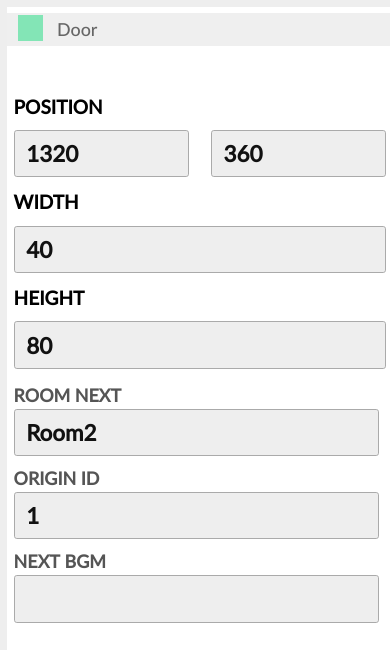
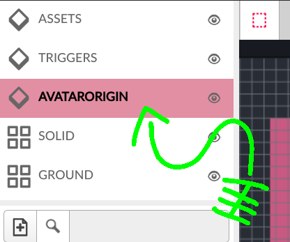
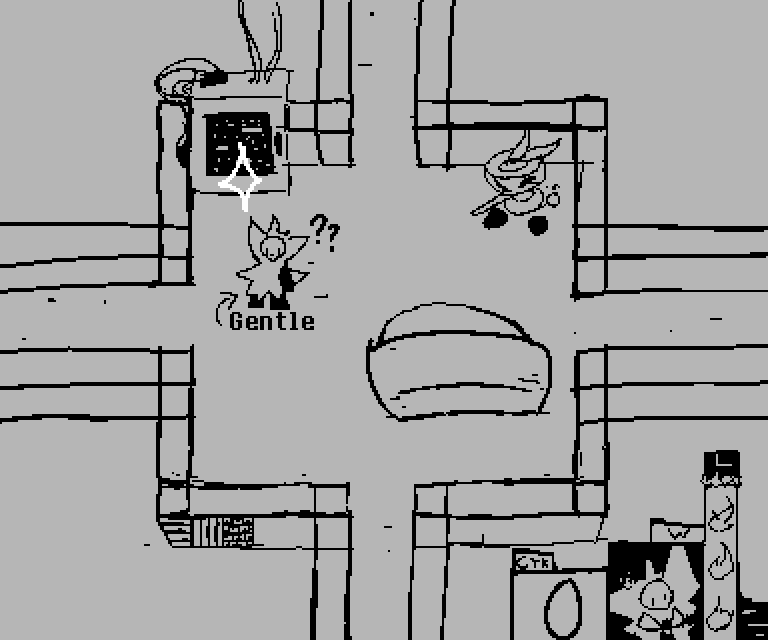
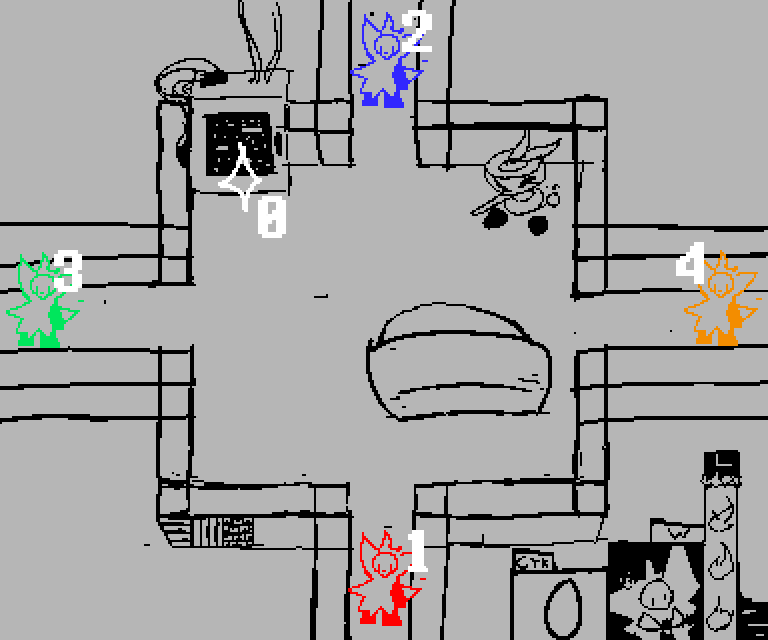

roomNext
The name of the Room within Overworld/Rooms to be created after this Door is crossed.
nextBGM
The name of the Audio track to be queued for playback after this Door is crossed..
originID
An ID to be used by the Overworld when placing the Avatars on the next room.
Further details can be found in the following section.

Let's say you have a living room.

Let's say you wanted to create this room. In which entry would you place the gentle fellow?
That's right: You don't know. There are 4 potential
entries the gentle fellow could have come through, and you wouldn't know which one they just passed.
That's what AvatarOrigins are for!

When a Door receives the player, it tells the Overworld its own originID.
The Overworld remembers this:
A bit of unsolicited advice: Deltarune's rooms are designed with a bit of a linearity to them.
You've never gotten lost on Deltarune, right? That's because of how rooms are designed.
My advice is that you reserve the 1st AvatarOrigin for the the Door to the past room, and the 2nd AvatarOrigin for the Door the player is intended to go through.
Did you notice the 0th AvatarOrigin? This one is reserved exclusively to be used by SavePoints.
This means, when creating the current room via a SavePoint, the Avatars shall be placed there!
Actually, let me highlight that for those skimming through the docs: